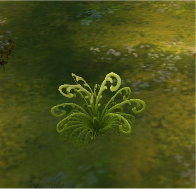
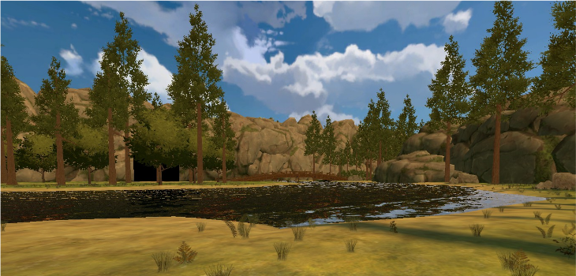
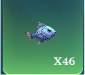
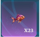
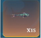
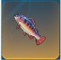
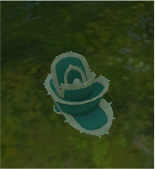
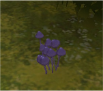
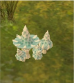

Commune
Légendaire

Plante marécageuse & désertique
Désertique → lame du chasseur maudit. Marécageuse → faux écarlate & lance de l'ombre rouge.
Ce registre répertorie les fleurs, champignons et poissons connus du Royaume. Chaque espèce est recensée avec sa rareté, son lieu de récolte et ses utilisations — médicinales, alimentaires ou artisanales — pour guider récolteurs, soigneurs et explorateurs.





Les composants végétaux entrent dans la fabrication des équipements du crépuscule.



